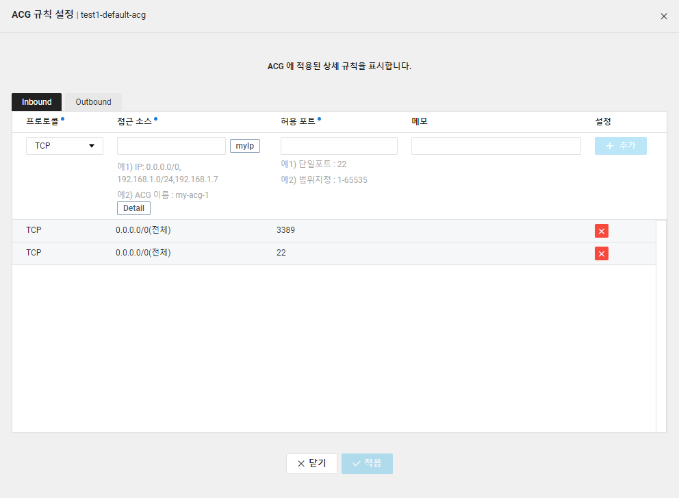

ACG(Access Control Group) 가이드
개요
ACG(Access Control Group)는 서버 간 네트워크 접근 제어 및 관리를 할 수 있는 IP/Port 기반 필터링 방화벽 서비스로 AWS에서는 비슷하게 Security Group이라는 것이 있습니다.
제한 사항
VPC
- VPC당 최대 500개까지 ACG 생성 가능
- NIC당 3개의 ACG를 허용
- Inbound / Outbound 각각 50개의 규칙 생성 가능
Classic
- 계정당 최대 100개까지 ACG를 생성 가능
- 각 ACG에는 최대 100개까지의 규칙을 설정할 수 있음
- 서버는 최대 5개의 ACG에 중복 포함될 수 있음
- 서버가 생성될 시 선택한 ACG는 변경이 불가하며, 반납 전까지 해당 ACG 규칙을 적용 받게 됨
Classic 환경에서는 서버 자체에 할당되는 개념이었으나 VPC에는 NIC 즉, 네트워크 카드에 할당되는 개념이어서 VPC 환경에서는 NIC 당 최대 3개까지 ACG를 적용할 수 있다.
기본 규칙
Default ACG
기본적으로 추가되는 ACG
- 모든 들어오는 연결(inbound traffic)을 차단함
- 모든 나가는 연결(outbound traffic)을 허용함
- Default ACG 내 속한 서버들끼리의 네트워크 양방향 통신(TCP, UDP, ICMP)이 허용됨
- 원격 접속 기본 포트 (Linux - 22, Windows - 3389)에 대한 TCP 허용됨
VPC 화면
Inbound

Outbound

Classic 화면

Custom ACG
Default ACG 이외에 사용자가 추가하는 ACG
- 모든 inbound traffic을 차단함(규칙으로 명시되어 있지 않음)
- 모든 outbound traffic을 허용함(규칙으로 명시되어 있지 않음)
참고 URL
https://docs.ncloud.com/ko/compute/compute-2-3.html
문서 최종 수정일 : 2020-11-26